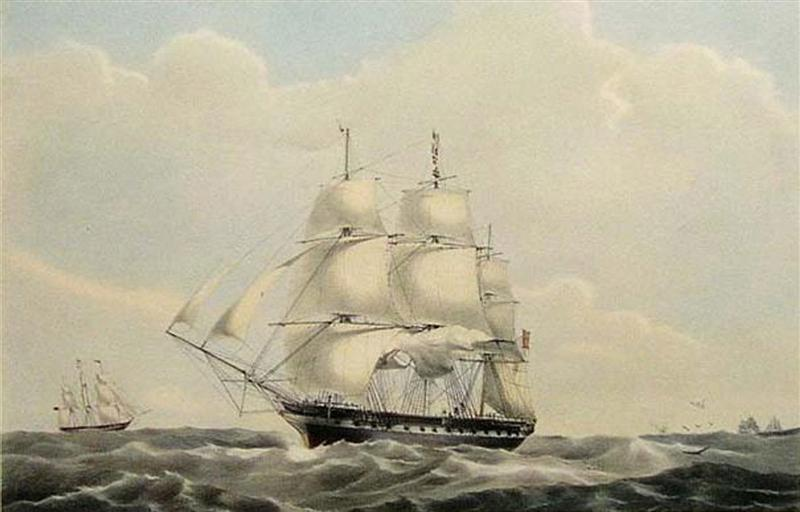
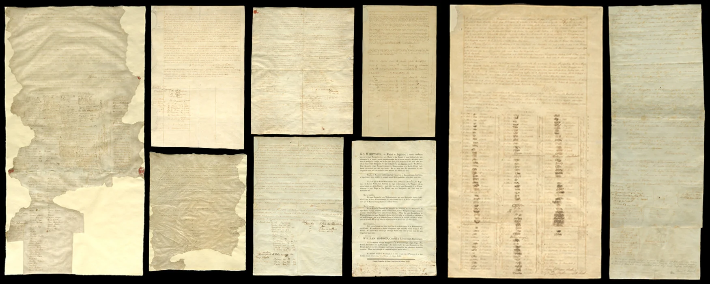
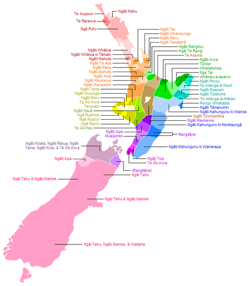
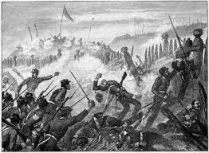

INFORMATION

Background and Context of the Treaty of Waitangi:
The drafting of the treaty was influenced by differing understandings and translations of key terms, such as "sovereignty" and "kawanatanga" (governance). While the British viewed the treaty as a mechanism for asserting sovereignty and ensuring British law and order, many Māori chiefs understood it as a partnership agreement that would safeguard their autonomy and land rights. These differing interpretations laid the foundation for future conflicts and grievances.
Content and Provisions of the Treaty:
The second article grants Māori the rights and privileges of British subjects, ensuring their protection and equal treatment under British law. This provision aimed to guarantee Māori rights and protect them from exploitation by settlers.
The third article establishes British law and governance in New Zealand, ensuring peace and order among settlers and Māori. However, disagreements over the extent of British authority and Māori autonomy led to conflicts and legal disputes.
Significance and Legacy of the Treaty:
Since the late 20th century, efforts to address historical injustices and promote treaty-based relationships have gained momentum. The Waitangi Tribunal, established in 1975, investigates breaches of the treaty and provides recommendations for redress. Treaty settlements, negotiated between the Crown and Māori iwi, aim to address past grievances and promote reconciliation, while the principles of the treaty are increasingly integrated into legislation, policies, and institutions.
Challenges and Controversies Surrounding the Treaty:
Issues such as Māori representation in government, resource management, and cultural preservation continue to provoke debate and activism. While progress has been made in addressing past injustices, achieving true partnership and reconciliation remains an ongoing journey for New Zealand society.